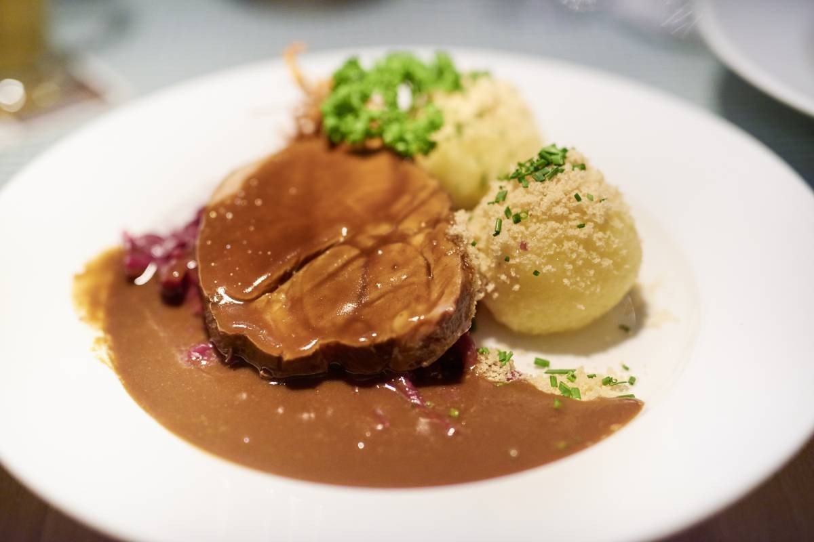
| 営業時間 | 夜：月〜日 17:30〜23:00（料理は21:00まで）／昼：土・日 12:30〜14:30（9月以降。20人以上の団体は平日昼も相談可） |
|---|---|
| 定休日 | なし（公式サイトに定休日の記載なし） |
| 住所 | Obere Neckarstraße 2, 69117 Heidelberg |
| 予約 | 推奨（公式サイトのオンライン予約・電話。屋外席は17:30〜19:30と20:00以降の2部制で空き次第） — ☎ +49 6221 739130 ／ 公式サイト |
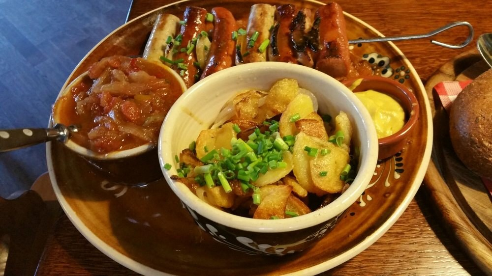
| 営業時間 | 火〜金 17:00〜23:00／土・日 12:00〜15:00、17:00〜23:00（料理はいずれも22:30まで） |
|---|---|
| 定休日 | 月曜 |
| 住所 | Neckarstaden 66, 69117 Heidelberg |
| 予約 | 推奨（電話） — ☎ +49 6221 23543 ／ 公式サイト |
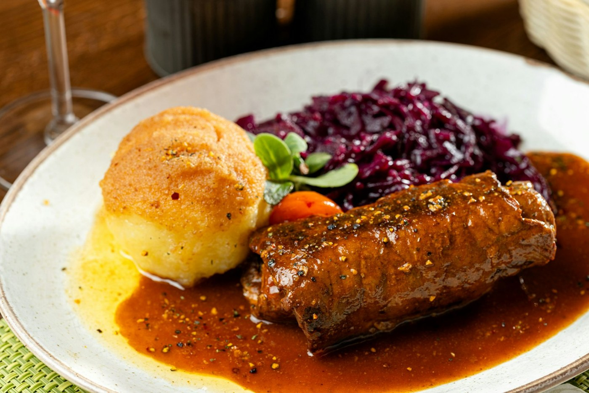
| 営業時間 | 日〜木 11:30〜21:30／金・土 11:30〜22:00 |
|---|---|
| 定休日 | なし（公式サイトに定休日の記載なし） |
| 住所 | Steingasse 7, 69117 Heidelberg |
| 予約 | 可（電話） — ☎ +49 6221 905380 ／ 公式サイト |
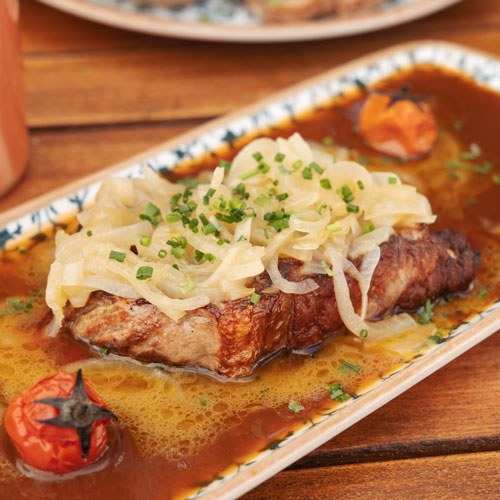
| 営業時間 | 日〜木 11:30〜23:00／金・土 11:30〜24:00 |
|---|---|
| 定休日 | なし（公式サイトに定休日の記載なし） |
| 住所 | Hauptstraße 190, 69117 Heidelberg |
| 予約 | 可（公式サイトのオンライン予約・電話・メール servus@wirtshaus-am-markt.de） — ☎ +49 6221 5994437 ／ 公式サイト |
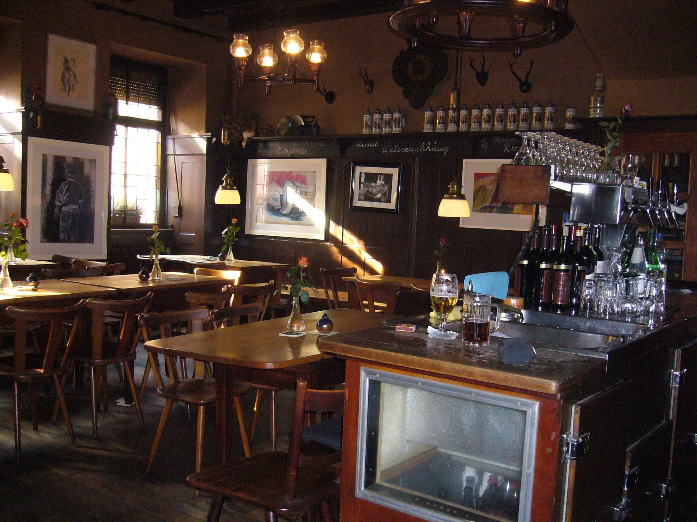
| 営業時間 | 毎日 17:00〜（heidelbergexpress は17:00〜24:00と記載） |
|---|---|
| 定休日 | なし |
| 住所 | Mühltalstraße 4, 69121 Heidelberg |
| 予約 | 推奨（電話のみ。14時以降。席単位の受付で卓単位では取れない） — ☎ +49 6221 480517 ／ 公式サイト |
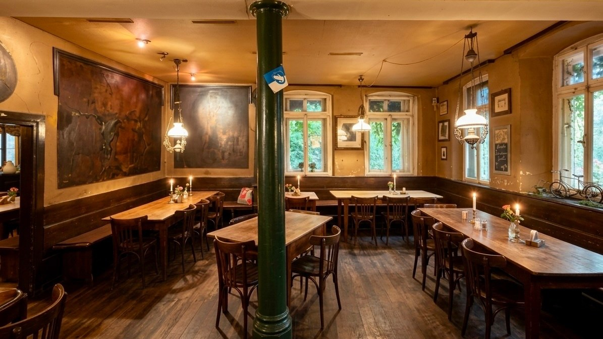
| 営業時間 | 火〜土 17:00〜 |
|---|---|
| 定休日 | 日曜・月曜 |
| 住所 | Handschuhsheimer Landstraße 96, 69121 Heidelberg |
| 予約 | 可（電話のみ。火〜土の15時以降） — ☎ +49 6221 413888 ／ 公式サイト |
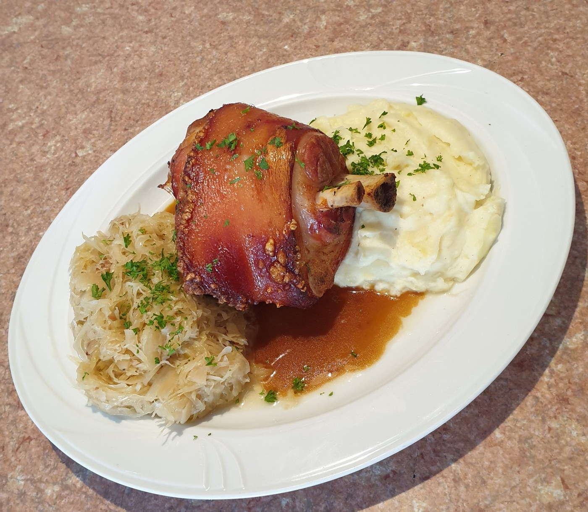
| 営業時間 | 水〜金 16:00〜24:00／土 15:00〜24:00／日 15:00〜23:45（料理は21:00まで） |
|---|---|
| 定休日 | 月曜・火曜（2026年10月26日〜11月3日は休業） |
| 住所 | Stettiner Straße 21, 69124 Heidelberg |
| 予約 | 可（電話） — ☎ +49 6221 765390 ／ 公式サイト |
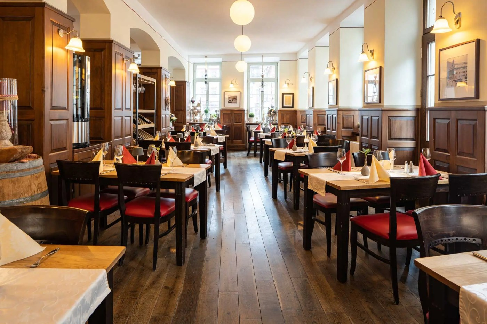
| 営業時間 | 毎日 11:00〜22:00（料理も同時間） |
|---|---|
| 定休日 | なし（2027年1月4日〜29日は冬季休業） |
| 住所 | Hauptstraße 204, 69117 Heidelberg |
| 予約 | 可（電話・メール info@goldener-falke-heidelberg.de。クリスマスマーケット期間の週末は推奨） — ☎ +49 6221 14330 ／ 公式サイト |
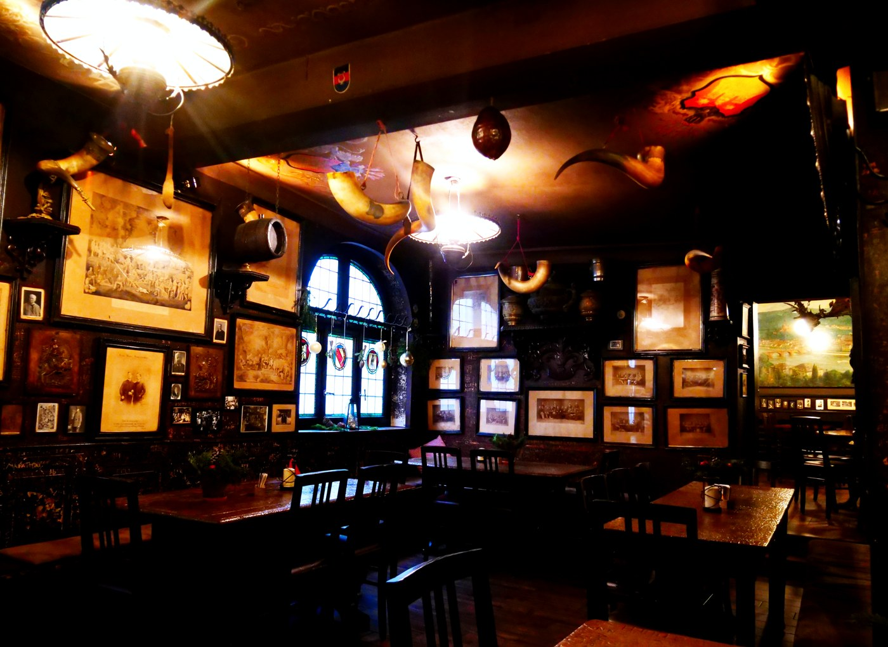
| 営業時間 | 金・土 17:30〜20:30（キッチン。公式サイト記載）。その他の曜日は団体等の相談に応じる |
|---|---|
| 定休日 | 日〜木（通常営業なし）。2026年8月15〜31日は夏季休業 |
| 住所 | Hauptstraße 217, 69117 Heidelberg |
| 予約 | 推奨。電話または公式サイトのフォーム（フォームは自動確定ではない。24時間以内は電話のみ）。無断キャンセルは1人25ユーロ — ☎ +49 6221 20977 ／ 公式サイト |
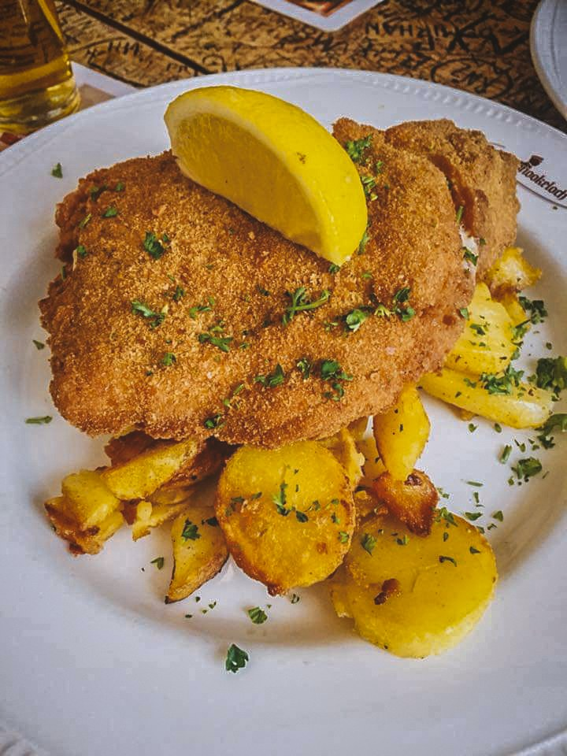
| 営業時間 | 公式連絡先ページ: 月〜木 11:00〜翌1:00、金 11:00〜翌3:00、土日 11:00〜翌4:00／2025年版メニュー: 日〜木 11:00〜翌1:00、金土 11:00〜翌3:00、ビアガーデン毎日11:00〜23:00 |
|---|---|
| 定休日 | なし（無休） |
| 住所 | Haspelgasse 8, 69117 Heidelberg |
| 予約 | 可。電話または公式サイトのフォーム — 公式サイト |
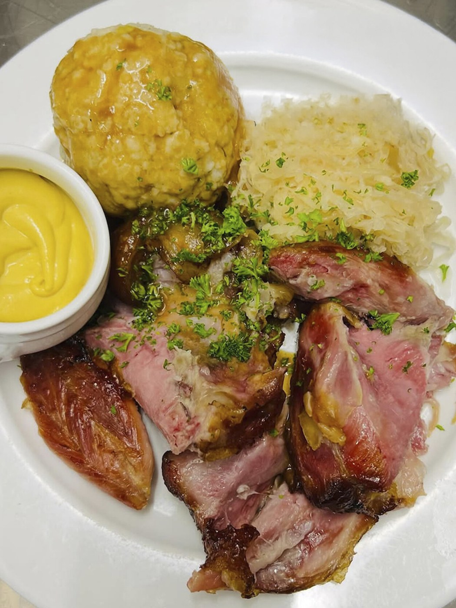
| 営業時間 | 日〜木 11:30〜24:00、金・土 11:30〜翌1:00 |
|---|---|
| 定休日 | なし（無休） |
| 住所 | Steingasse 9, 69117 Heidelberg |
| 予約 | 可。公式サイトのオンライン予約・電話。予約できるのは店内席のみで、ビアガーデンは予約不可 — ☎ +49 6221 165850 ／ 公式サイト |
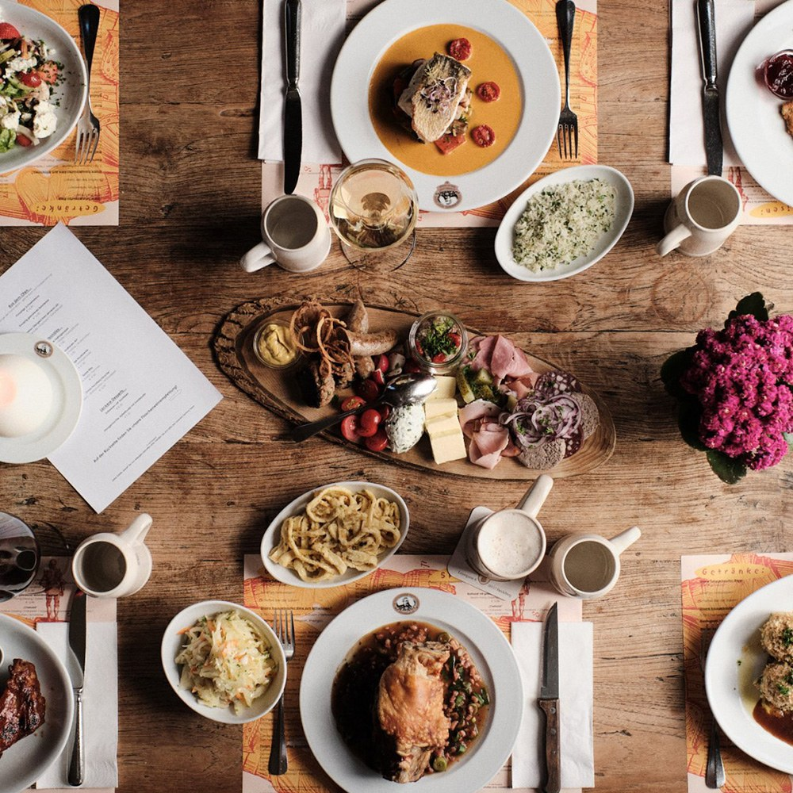
| 営業時間 | 月〜木 12:00〜21:30、金〜日 12:00〜22:30 |
|---|---|
| 定休日 | なし（無休） |
| 住所 | Leyergasse 6, 69117 Heidelberg |
| 予約 | 推奨。電話・OpenTable・公式サイトのフォーム — ☎ +49 6221 502980 ／ 公式サイト |
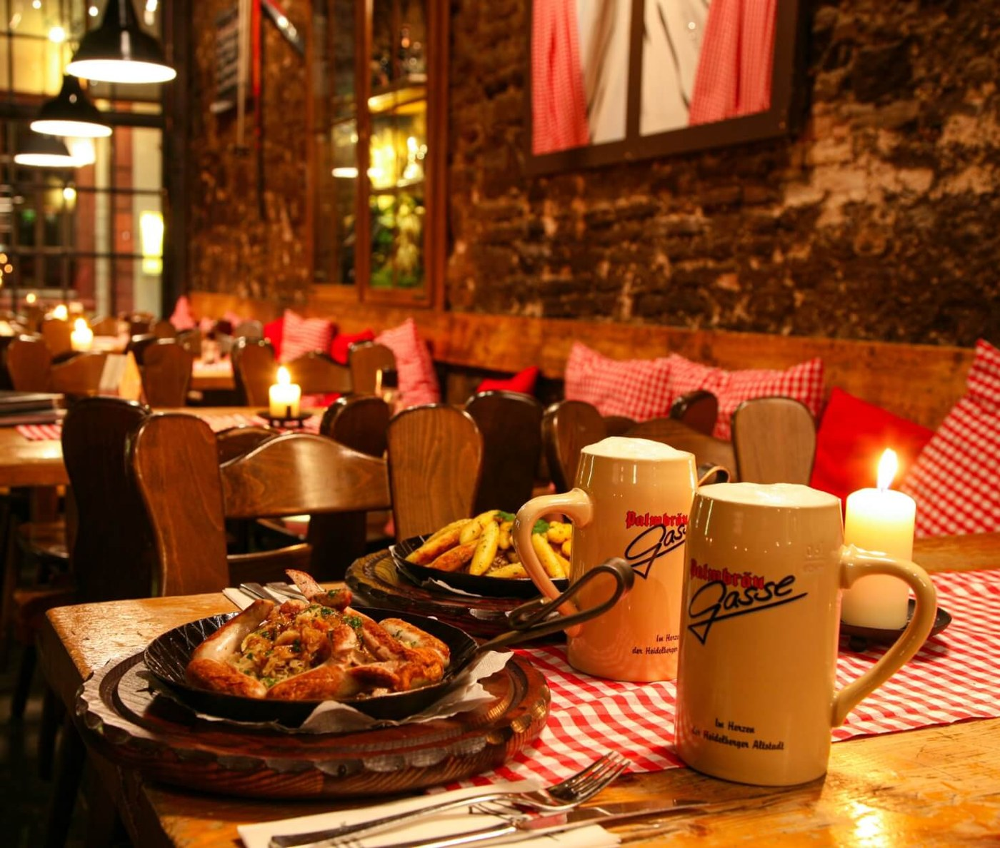
| 営業時間 | 毎日12:00〜（料理は通し営業。閉店時刻は公式サイトに記載なし） |
|---|---|
| 定休日 | なし（無休） |
| 住所 | Hauptstraße 185, 69117 Heidelberg |
| 予約 | 可。電話・公式サイト。団体は要予約 — ☎ +49 6221 28536 ／ 公式サイト |
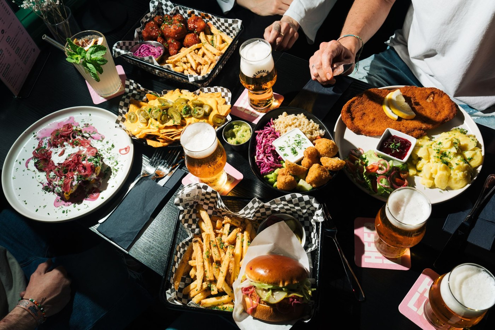
| 営業時間 | 火〜金 18:00〜、土・日 15:00〜（閉店時刻は公式サイトに記載なし） |
|---|---|
| 定休日 | 月 |
| 住所 | Brückenkopfstraße 1, 69120 Heidelberg |
| 予約 | 可。公式サイトのオンライン予約。スポーツ中継の日は混む — 公式サイト |
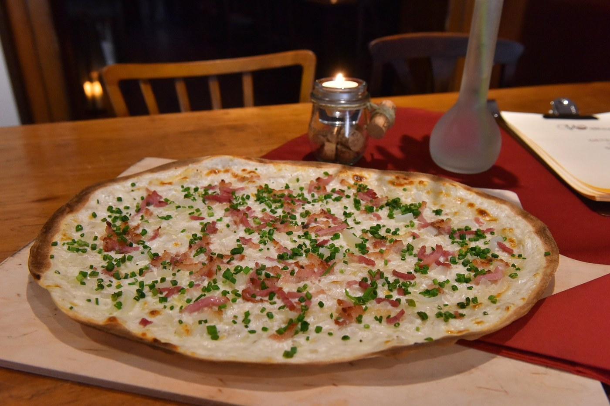
| 営業時間 | 毎日17:00〜（公式）。月〜木 〜24:00、金・土 〜翌1:00、日 〜23:00（heidelbars・coolibri 掲載） |
|---|---|
| 定休日 | なし（無休） |
| 住所 | Hauptstraße 224, 69117 Heidelberg |
| 予約 | 推奨。電話・メール（info@weinstube-witter.de） — ☎ +49 6221 5992040 ／ 公式サイト |
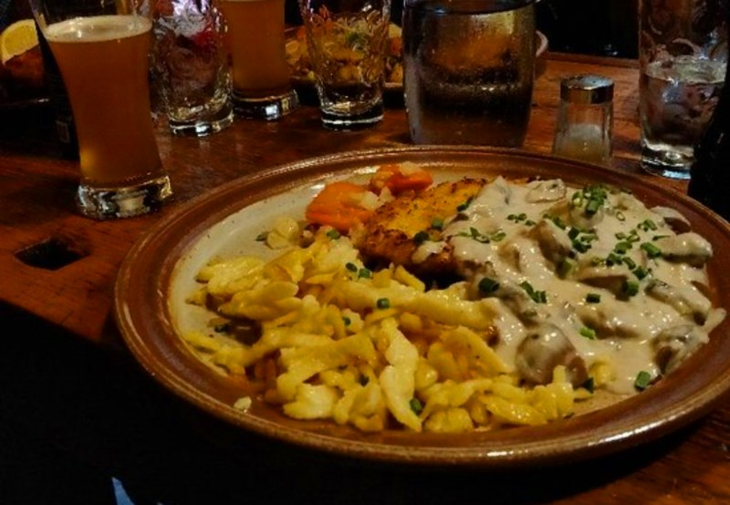
| 営業時間 | 月〜金 17:00〜22:00、土・日 12:00〜22:00（料理は毎日21:00まで。2026年1月2日からの時間） |
|---|---|
| 定休日 | 2026年12月24〜26日、2027年1月1日 |
| 住所 | Bauamtsgasse 7, 69117 Heidelberg |
| 予約 | 可。メールで（電話はつながりにくいと公式に記載） — 公式サイト |
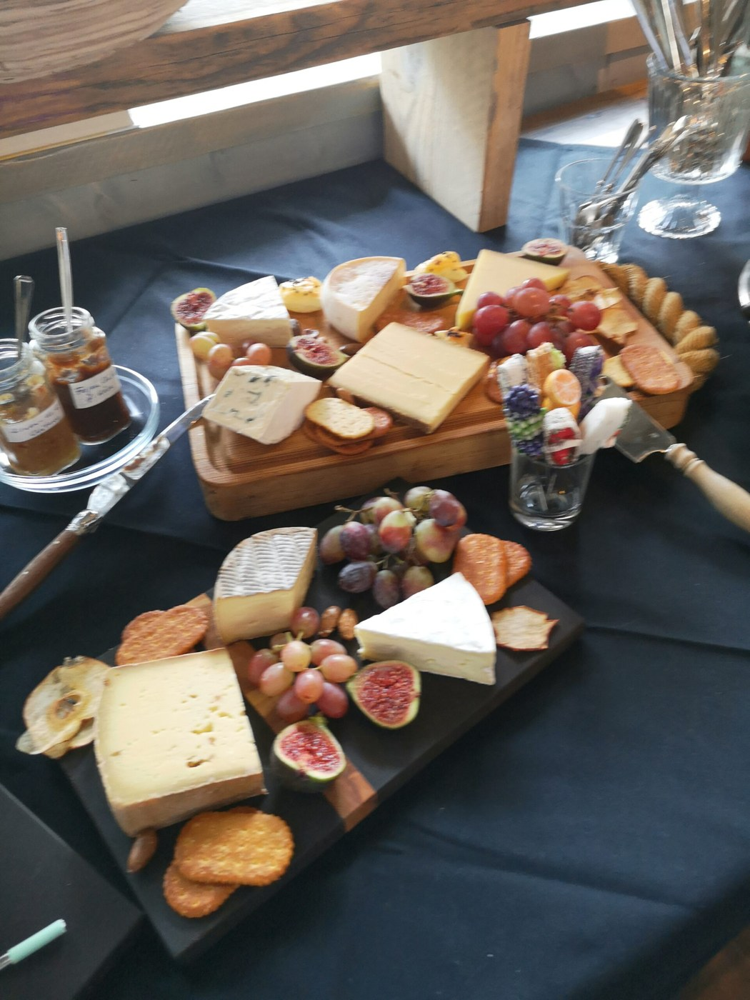
| 営業時間 | 水・木 14:00〜19:00、金・土 14:00〜21:00、日 16:00〜21:00（料理は金〜日18:00から） |
|---|---|
| 定休日 | 月・火 |
| 住所 | Schwetzinger Terrasse 3, 69115 Heidelberg |
| 予約 | 可。電話・メール（felix@laibachundseeger.de）。試飲会は要申込 — ☎ +49 6221 3538510 ／ 公式サイト |
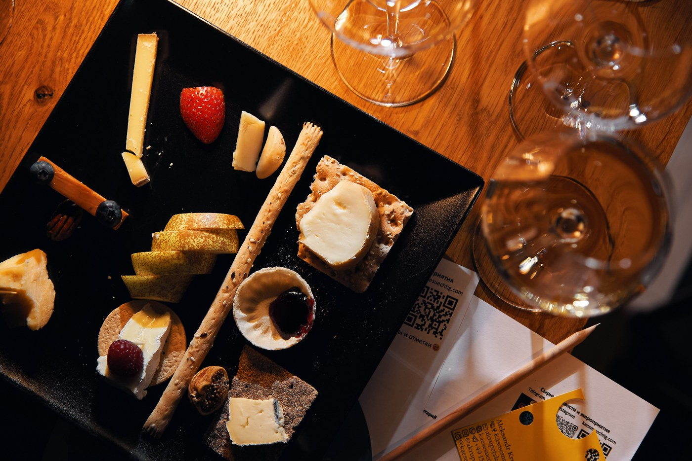
| 営業時間 | 火〜木 16:00〜22:00、金 16:00〜23:00、土 15:00〜23:00、日 15:00〜21:00 |
|---|---|
| 定休日 | 月 |
| 住所 | Da-Vinci-Straße 18, 69115 Heidelberg |
| 予約 | 可。公式サイトの予約ページ・電話 — ☎ +49 151 70293902 ／ 公式サイト |
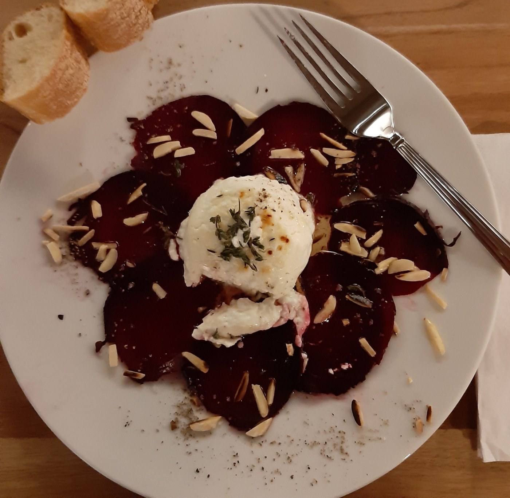
| 営業時間 | 火〜金 18:00〜23:00（土は貸切の宴会のみ） |
|---|---|
| 定休日 | 日・月（土は貸切のみ） |
| 住所 | Bergheimer Straße 147, 69115 Heidelberg |
| 予約 | 推奨。電話 — ☎ +49 6221 3615437 ／ 公式サイト |
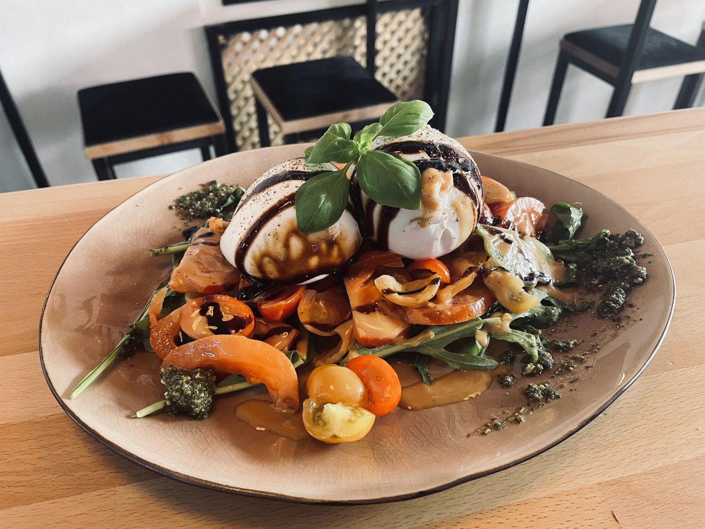
| 営業時間 | 月・水〜日 17:00〜23:00（coolibri 掲載）。公式は『たいてい16時から』 |
|---|---|
| 定休日 | 火（coolibri 掲載） |
| 住所 | Steingasse 16, 69117 Heidelberg |
| 予約 | 可。電話・メール（wines.heidelberg@yahoo.com） — ☎ +49 1520 6318033 ／ 公式サイト |
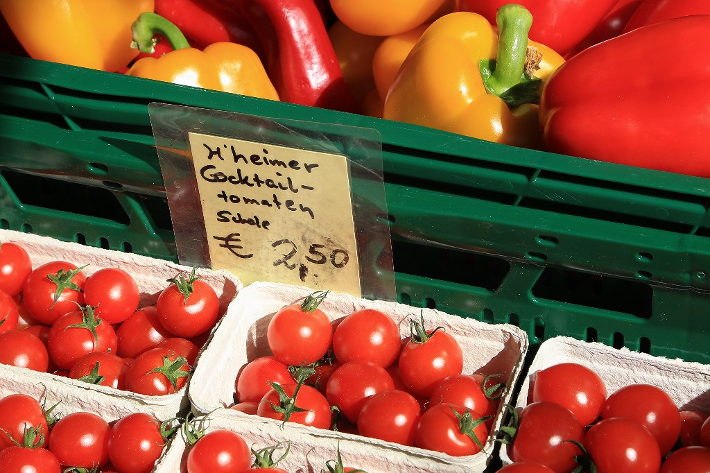
| 営業時間 | 水曜・土曜 7:00〜13:00 |
|---|---|
| 定休日 | 水・土以外 |
| 住所 | Marktplatz, 69120 Heidelberg（Neuenheim） |
| 予約 | 不要 — 公式サイト |
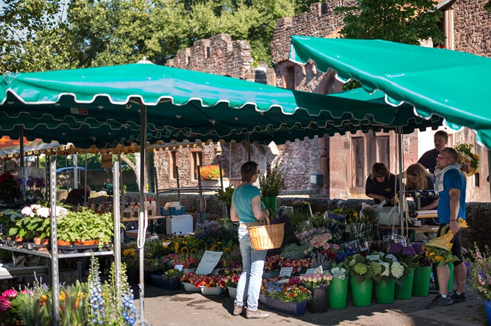
| 営業時間 | 土曜 7:00〜13:00 |
|---|---|
| 定休日 | 土曜以外 |
| 住所 | Tiefburgvorplatz, 69121 Heidelberg（Handschuhsheim） |
| 予約 | 不要 — 公式サイト |
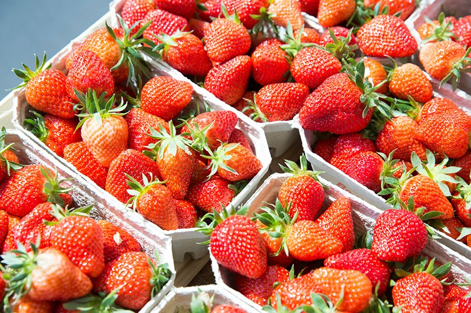
| 営業時間 | 金曜 14:00〜19:00 |
|---|---|
| 定休日 | 金曜以外 |
| 住所 | Gadamerplatz, 69115 Heidelberg（Bahnstadt） |
| 予約 | 不要 — 公式サイト |
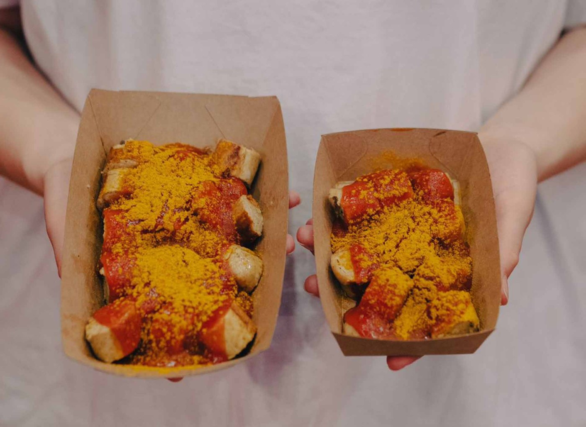
| 営業時間 | 月〜木 11:30〜20:00／金・土 11:30〜翌4:00／日・祝 11:30〜20:00 |
|---|---|
| 定休日 | なし |
| 住所 | Hauptstraße 166, 69117 Heidelberg |
| 予約 | 不要 — ☎ +49 6221 9031856 ／ 公式サイト |
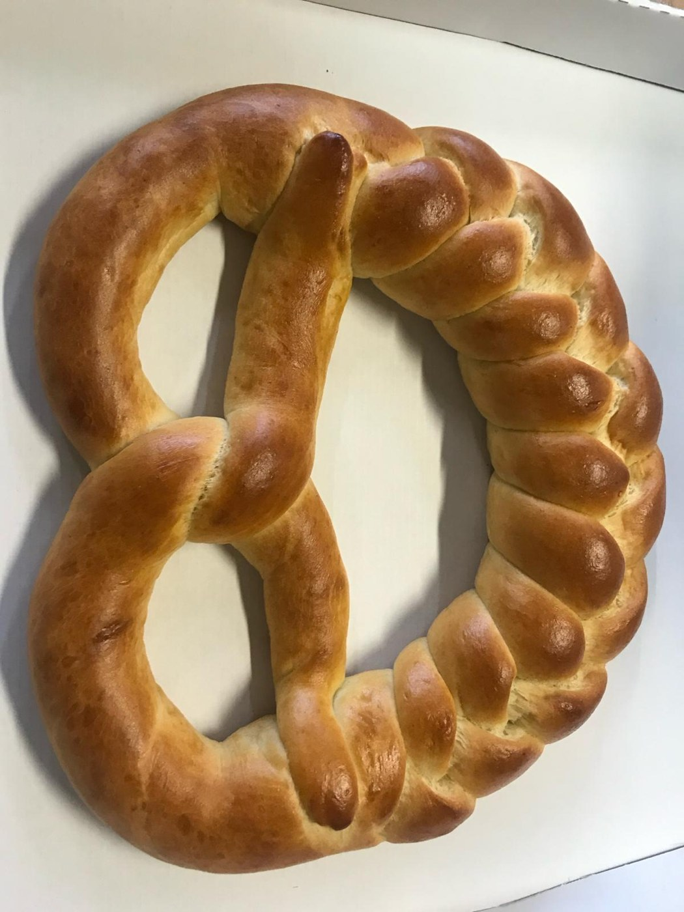
| 営業時間 | 木・金 8:00〜17:00／土 7:30〜13:00 |
|---|---|
| 定休日 | 日曜〜水曜 |
| 住所 | Kurpfalzhof 2, 69124 Heidelberg（Kirchheim） |
| 予約 | 不要（パンの予約注文は公式サイトの「Vorbestellung」から可） — ☎ +49 6221 7513010 ／ 公式サイト |
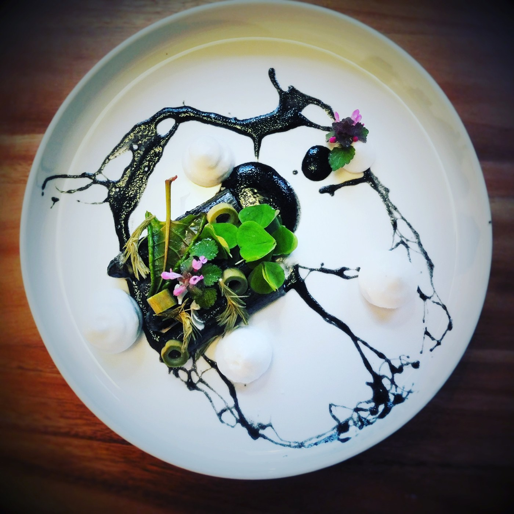
| 営業時間 | 水〜土 18:30〜 |
|---|---|
| 定休日 | 日曜・月曜・火曜・祝日 |
| 住所 | Am Kohlhof 5, 69117 Heidelberg |
| 予約 | 要（公式サイトの予約システムのみ。毎月1日0:00に半年先の1か月分を開放。満席時は順番待ちに登録できる） — ☎ +49 172 9171744 ／ 公式サイト |
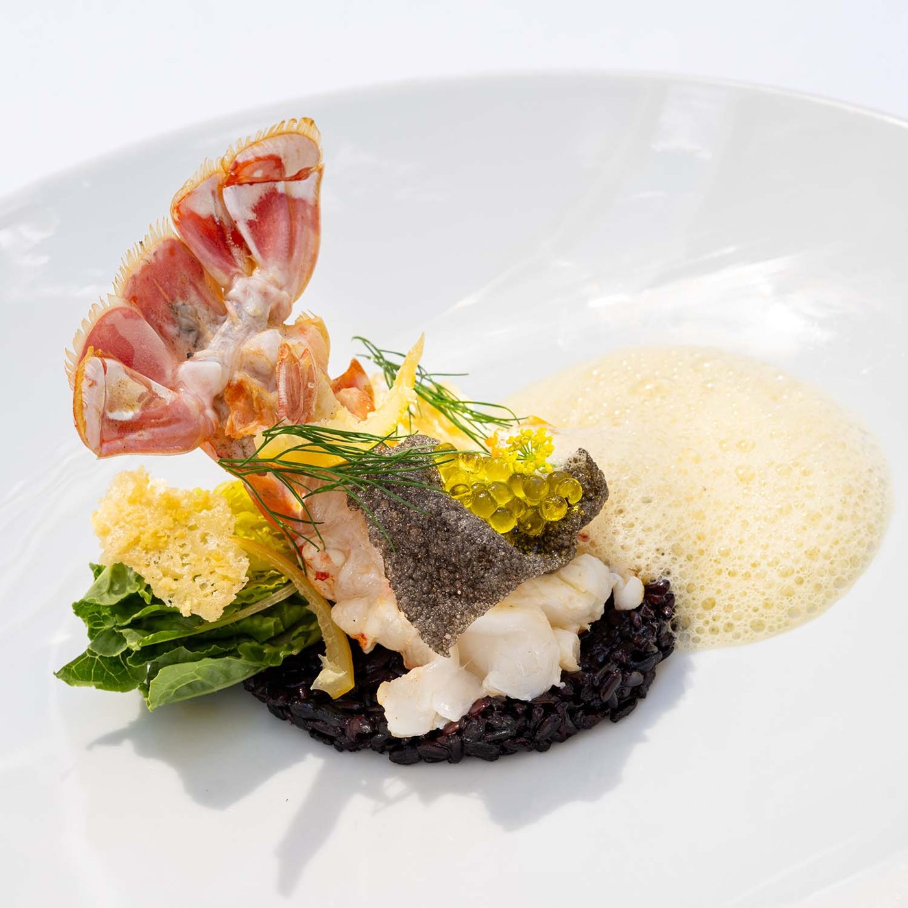
| 営業時間 | 冬季のみ営業 月〜日 12:00〜23:00（料理の注文は21:00まで） |
|---|---|
| 定休日 | 定休日なし（夏季は休み、同じホテルの夏季レストランが営業） |
| 住所 | Friedrich-Ebert-Anlage 1, 69117 Heidelberg |
| 予約 | 推奨（ホテル公式サイトのテーブル予約・電話） — ☎ +49 6221 5150 ／ 公式サイト |
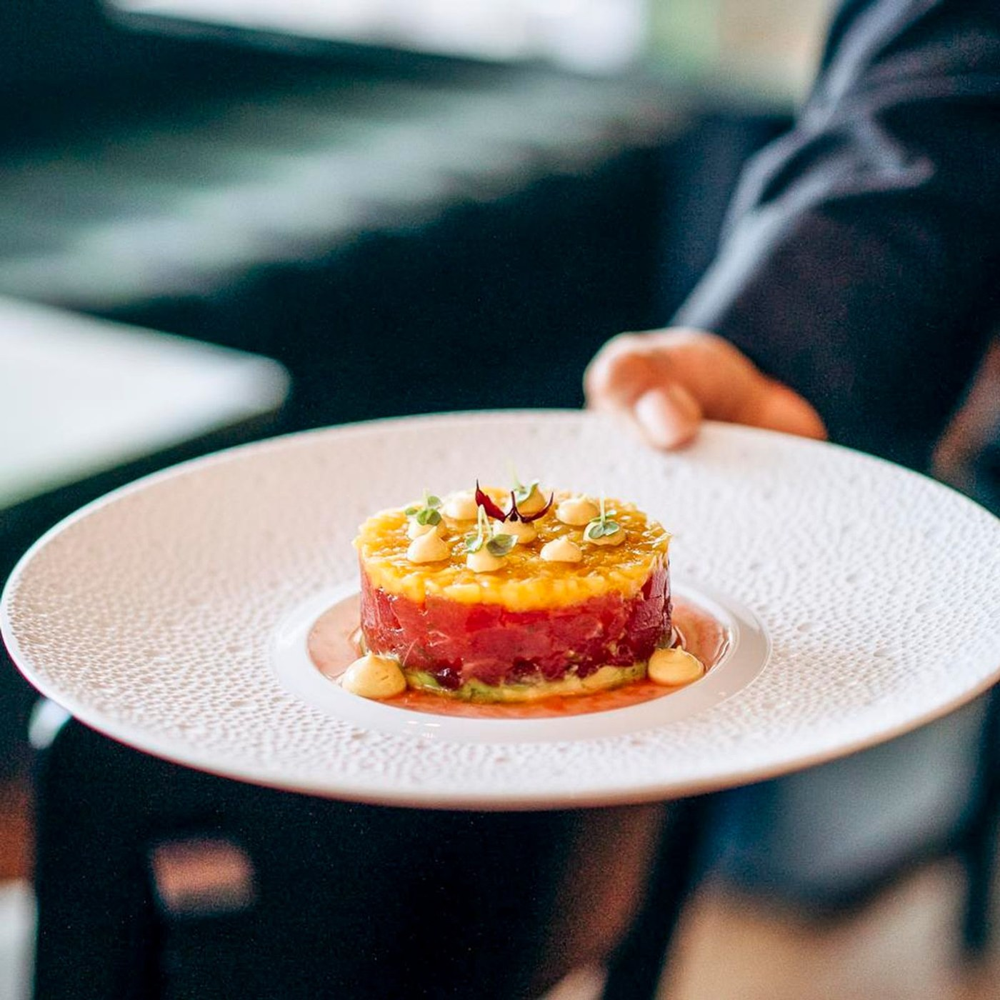
| 営業時間 | 火〜金 11:30〜23:00（ビジネスランチ11:30〜15:00、日替わり〜17:00、夜の料理17:30〜21:30）／土 11:30〜23:00（料理は22:00まで）。併設のピーノズ・バー 火・水17:00〜24:00、木〜翌1:00、金・土〜翌2:00 |
|---|---|
| 定休日 | 日曜・月曜（祝日も営業） |
| 住所 | Friedrich-Ebert-Anlage 2, 69117 Heidelberg |
| 予約 | 推奨（電話・メール・公式サイトのオンライン予約）。犬は同伴不可 — ☎ +49 6221 6742959 ／ 公式サイト |
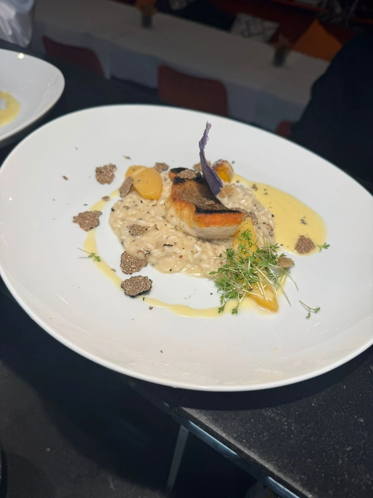
| 営業時間 | 木〜月 18:00〜23:00 |
|---|---|
| 定休日 | 火曜・水曜 |
| 住所 | Brückenstraße 14, 69120 Heidelberg |
| 予約 | 推奨（電話・WhatsApp・メール post@restaurant-philosoph.de） — ☎ +49 160 7987032 ／ 公式サイト |
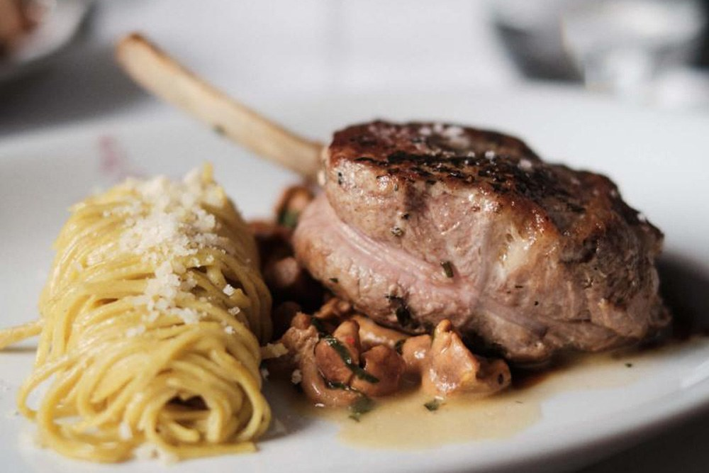
| 営業時間 | 火〜土 17:30〜 |
|---|---|
| 定休日 | 日曜・月曜 |
| 住所 | Große Mantelgasse 24, 69117 Heidelberg |
| 予約 | 推奨（公式サイトのテーブル予約・電話） — ☎ +49 6221 90000 ／ 公式サイト |
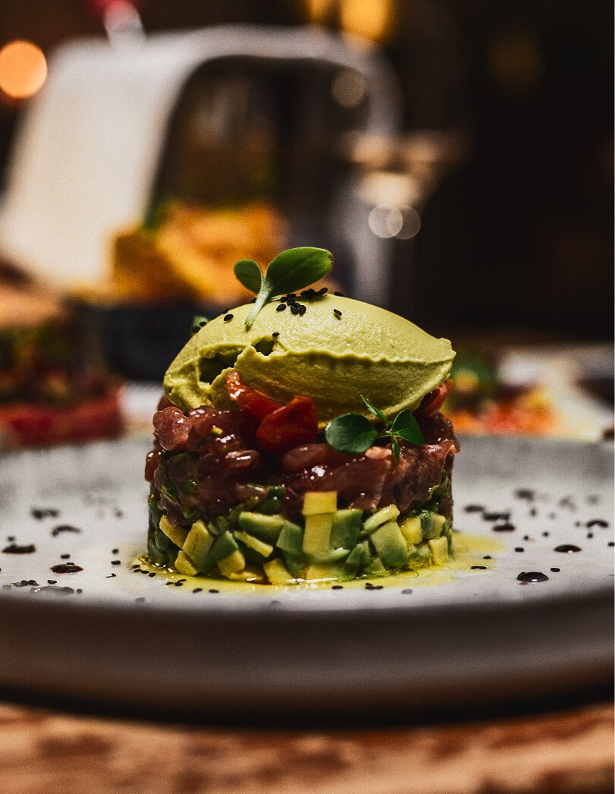
| 営業時間 | 月〜土 17:30〜23:30 |
|---|---|
| 定休日 | 日曜 |
| 住所 | Dreikönigstraße 1-3, 69117 Heidelberg |
| 予約 | 推奨（公式サイトの予約フォーム・電話） — ☎ +49 6221 7258271 ／ 公式サイト |
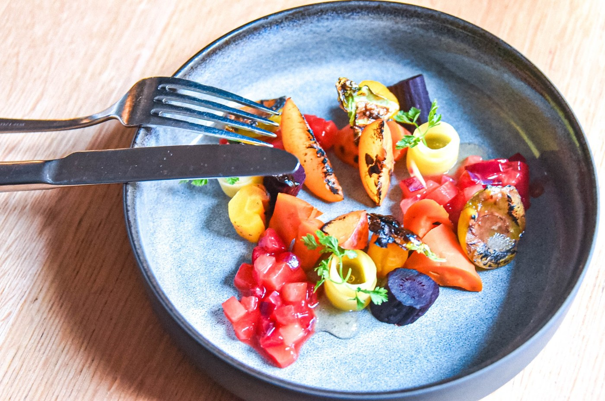
| 営業時間 | 火〜土 11:30〜14:30（プラ・デュ・ジュール。料理の注文は14:00まで）／17:30〜22:30（コースとアラカルト。料理の注文は21:30まで） |
|---|---|
| 定休日 | 日曜・月曜（2026年12月25〜28日と2027年1月1〜11日は休業） |
| 住所 | Brückenstraße 17, 69120 Heidelberg |
| 予約 | 推奨（電話・メール info@lecoq-hd.de） — ☎ +49 6221 6736791 ／ 公式サイト |
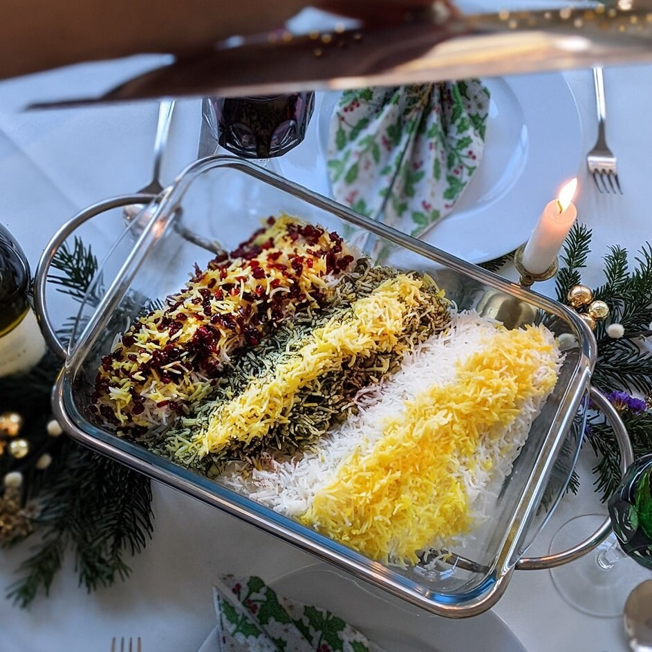
| 営業時間 | 月〜金 17:30〜22:30／土・日・祝 12:00〜22:30 |
|---|---|
| 定休日 | 定休日なし（2026年10月16日〜11月2日は休暇で休業、11月3日から営業予定） |
| 住所 | Rohrbacher Str. 22, 69115 Heidelberg |
| 予約 | 推奨（公式サイトの予約ページ・電話） — ☎ +49 6221 619333 ／ 公式サイト |
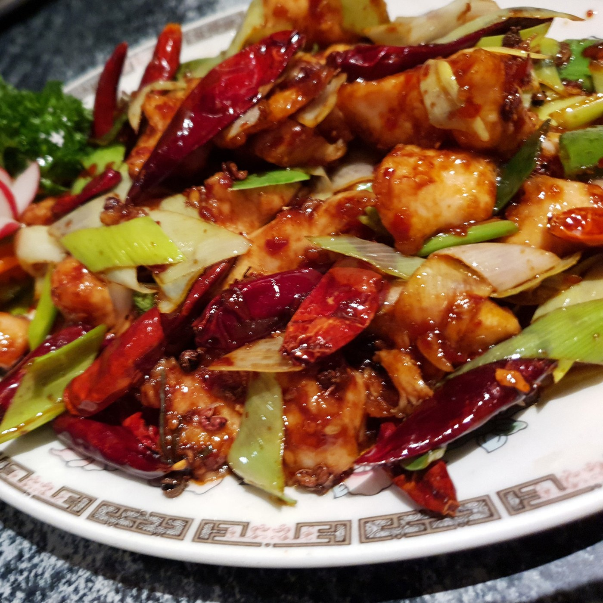
| 営業時間 | 12:00〜14:30／17:30〜21:30（金・土は22:00まで） |
|---|---|
| 定休日 | 不定休（日替わりの休業日あり。公式サイトは事前の電話確認を推奨） |
| 住所 | Haspelgasse 2, 69117 Heidelberg |
| 予約 | 推奨（電話） — ☎ +49 6221 29713 ／ 公式サイト |
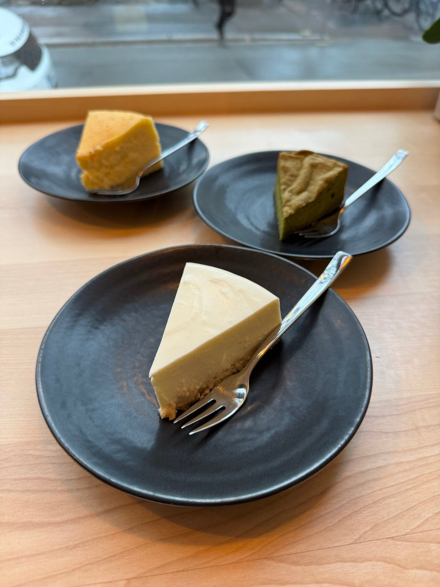
| 営業時間 | 火〜木 昼12:00〜14:00／カフェ14:00〜18:00／夜18:00〜21:00（閉店22:00）。金・土 昼12:00〜14:30／カフェ14:30〜18:00／夜18:00〜21:30（閉店23:00） |
|---|---|
| 定休日 | 日曜・月曜（公式サイトに日・月の営業時間の記載がないため休業と判断。未確認） |
| 住所 | Märzgasse 20, 69117 Heidelberg |
| 予約 | 夜（18時以降）のみ可。WhatsAppかSMSで申し込み、店からの確認をもって成立 — ☎ +49 178 6816824 ／ 公式サイト |
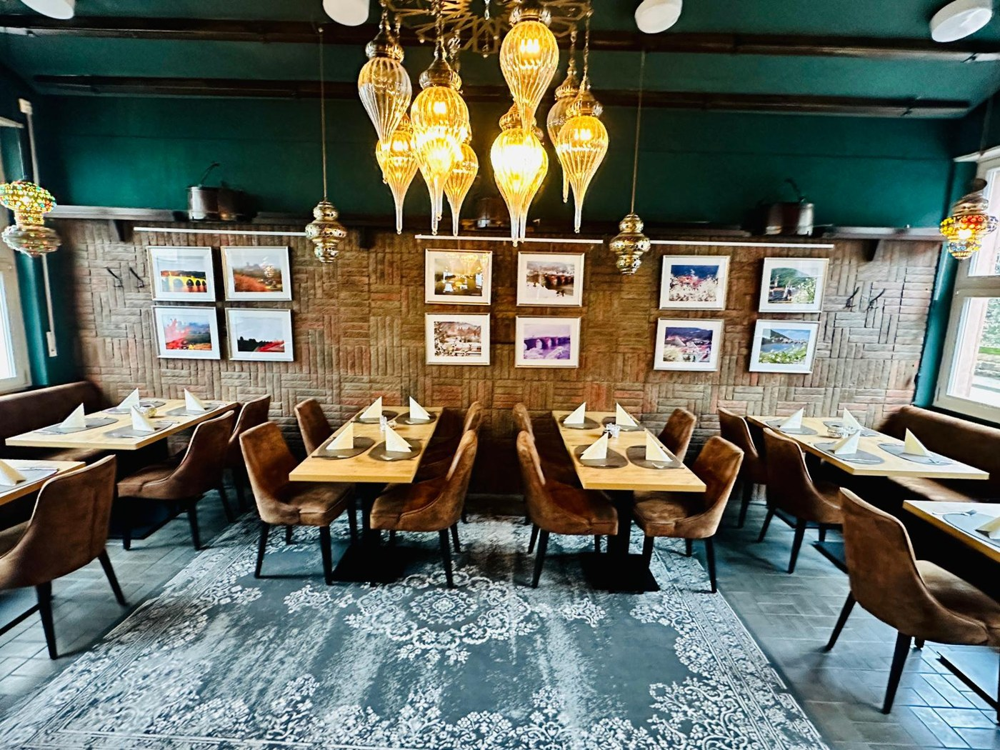
| 営業時間 | 月〜金 17:00〜24:00／土 16:00〜24:00／日・祝 12:30〜24:00（料理の注文は22:00まで） |
|---|---|
| 定休日 | 定休日なし |
| 住所 | Zwingerstraße 15a, 69117 Heidelberg |
| 予約 | 可（公式サイトの予約フォーム・電話） — ☎ +49 6221 29395 ／ 公式サイト |
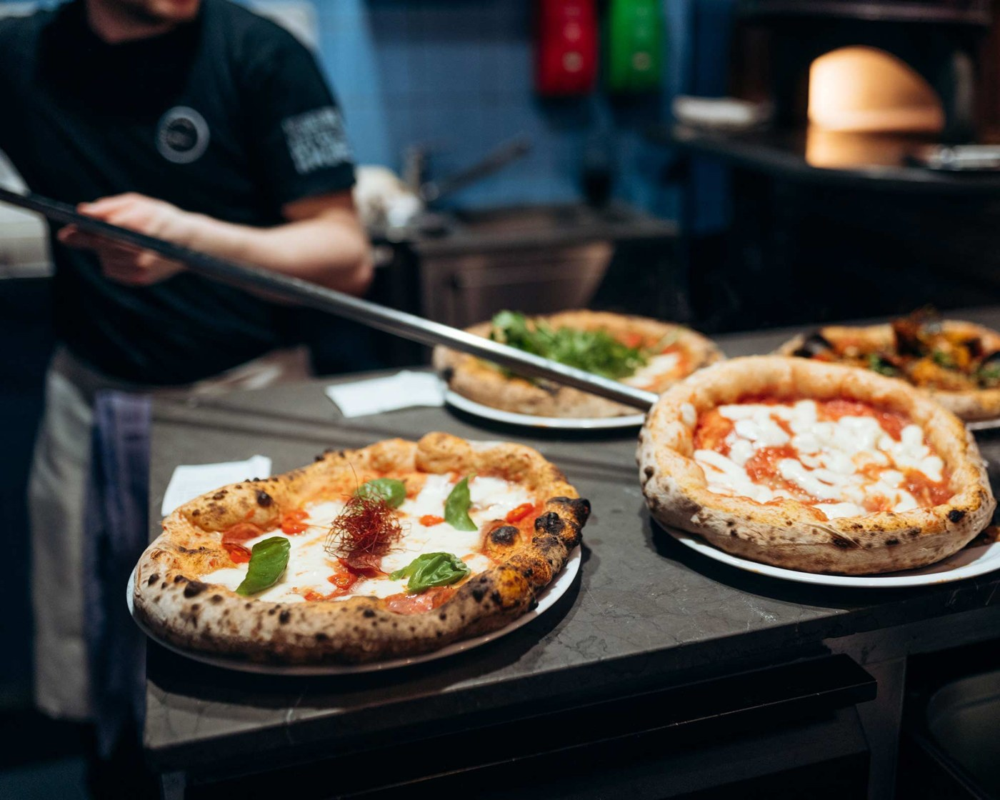
| 営業時間 | 月〜水・日 11:00〜23:00／木〜土 11:00〜翌1:00 |
|---|---|
| 定休日 | 定休日なし |
| 住所 | Hauptstraße 202, 69117 Heidelberg |
| 予約 | 可（電話・メール info@papi-heidelberg.de・公式サイトのオンライン予約） — ☎ +49 6221 6563098 ／ 公式サイト |
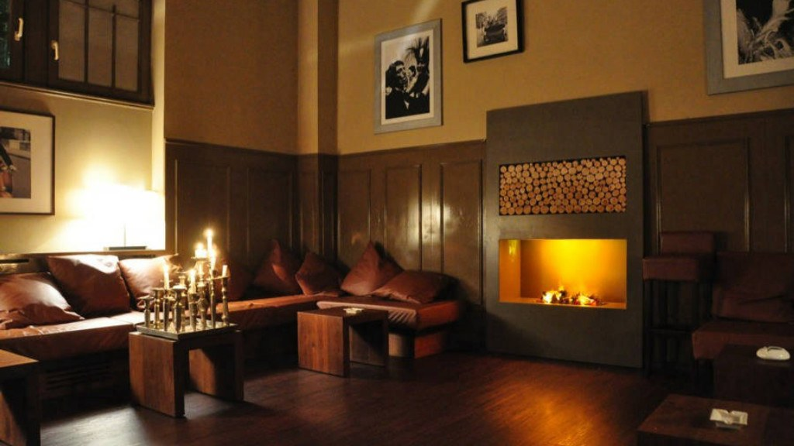
| 営業時間 | 毎日 11:30〜24:00 |
|---|---|
| 定休日 | 定休日なし |
| 住所 | Neuenheimer Landstraße 5, 69120 Heidelberg |
| 予約 | 推奨（電話・メール info@rossini-heidelberg.de） — ☎ +49 6221 9148710 ／ 公式サイト |
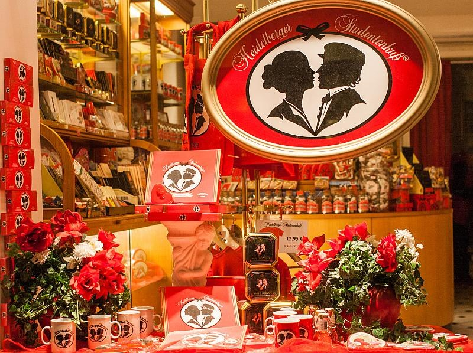
| 営業時間 | 月〜土 11:00〜18:00／日 12:00〜18:00 |
|---|---|
| 定休日 | なし（公式の営業時間表は毎日営業） |
| 住所 | Haspelgasse 16, 69117 Heidelberg |
| 予約 | 不要（店頭販売。まとめ買い・ギフトはメール knoesel@t-online.de で注文可） — ☎ +49 6221 22345 ／ 公式サイト |
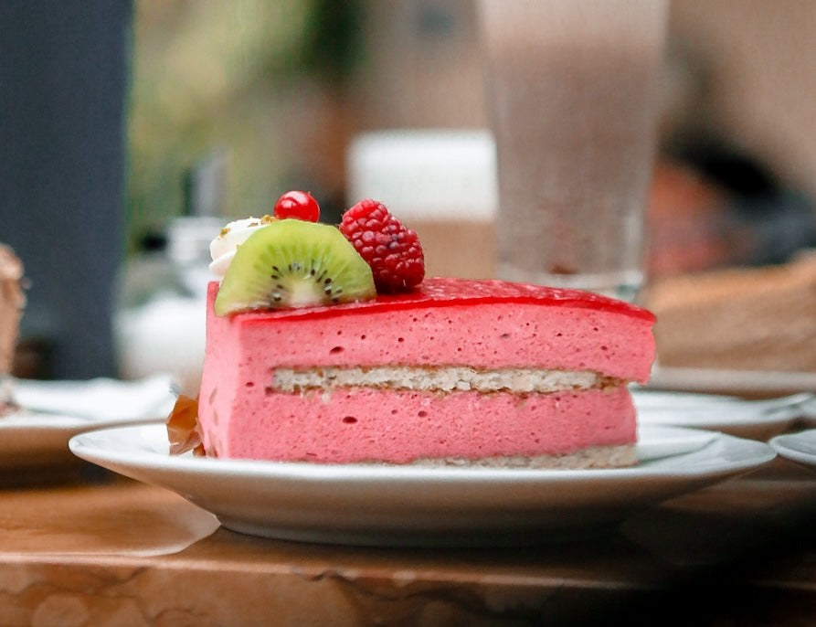
| 営業時間 | 火〜日 9:30〜18:00（朝食は12:30まで） |
|---|---|
| 定休日 | 月曜 |
| 住所 | Hauptstraße 94, 69117 Heidelberg |
| 予約 | 可（公式サイトの予約ページ・OpenTable） — ☎ +49 6221 14680 ／ 公式サイト |
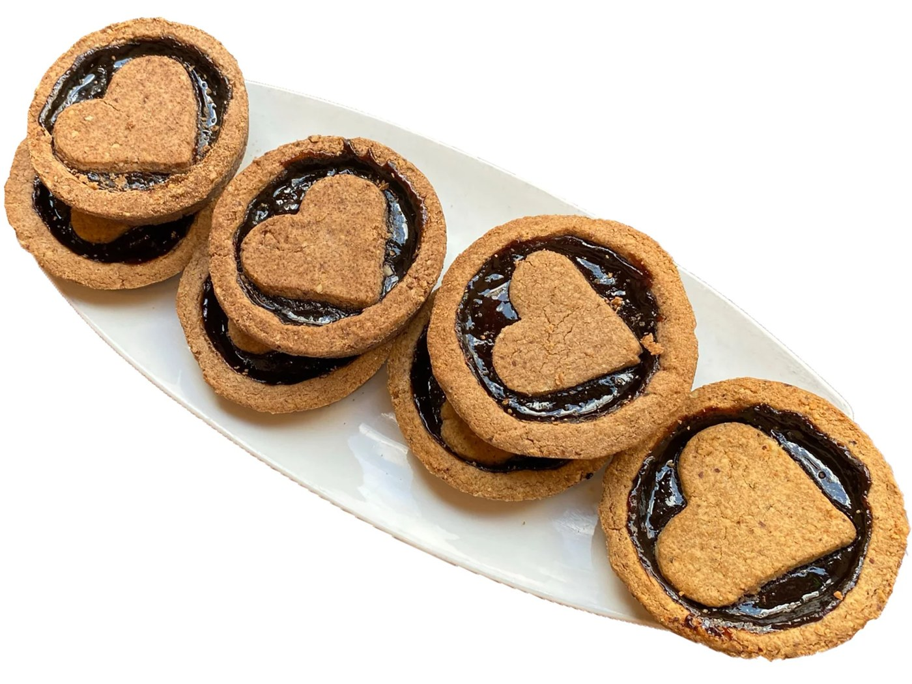
| 営業時間 | 日〜木 9:30〜19:00／金・土 9:30〜20:00 |
|---|---|
| 定休日 | なし（公式は毎日営業と表示） |
| 住所 | Hauptstraße 160, 69117 Heidelberg |
| 予約 | 不要（予約についての公式の記載なし） — ☎ +49 6221 28192 ／ 公式サイト |
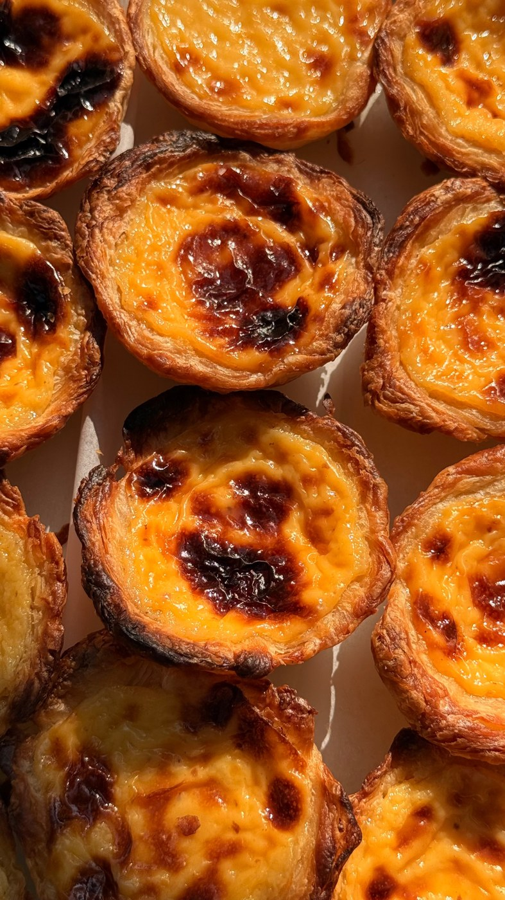
| 営業時間 | 月〜土 9:30〜18:00／日 10:30〜17:30 |
|---|---|
| 定休日 | なし（公式の営業時間表は毎日営業） |
| 住所 | Untere Neckarstraße 24, 69117 Heidelberg |
| 予約 | 不要（予約についての公式の記載なし） — ☎ +49 157 57993134 ／ 公式サイト |
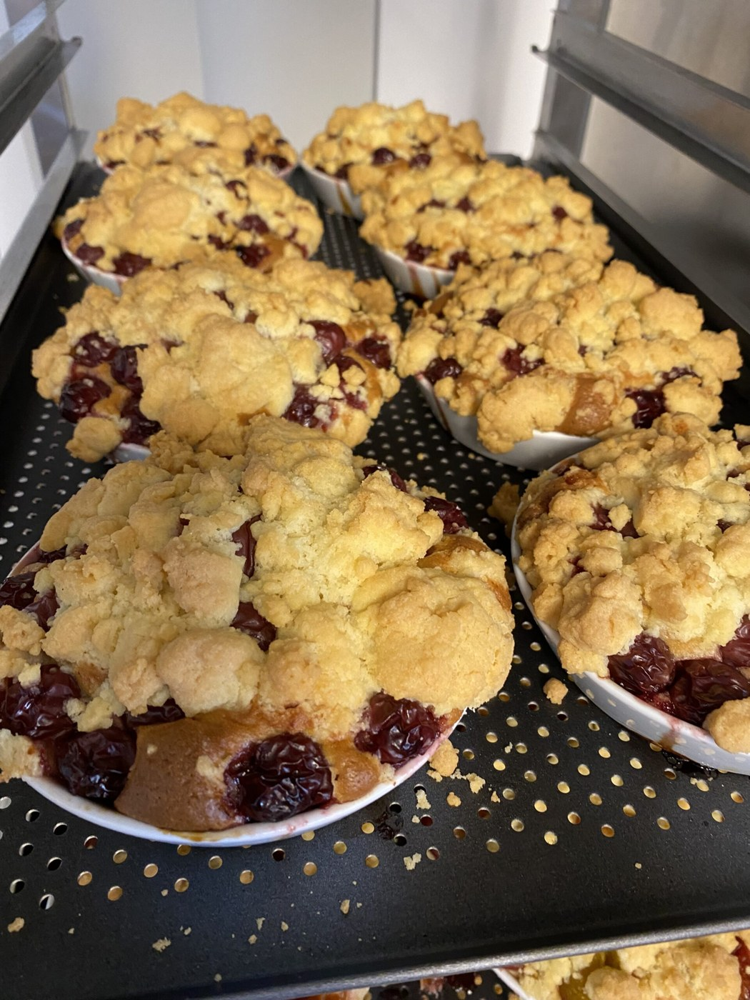
| 営業時間 | 月〜土 11:00〜21:00／日・祝 12:00〜21:00（雨・嵐の日は早めに閉店） |
|---|---|
| 定休日 | なし |
| 住所 | Hauptstraße 90, 69117 Heidelberg |
| 予約 | 不要 — ☎ +49 6221 5860559 ／ 公式サイト |
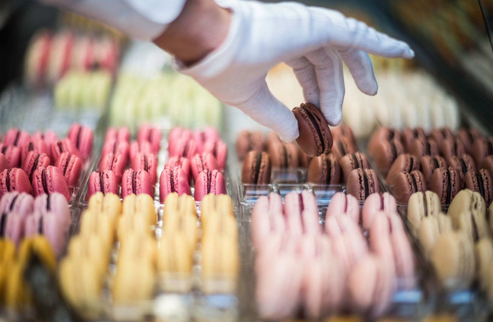
| 営業時間 | 月〜金 8:00〜18:00／土 8:00〜19:00／日・祝 8:00〜18:00（ゾフィーン通り店は月〜土7:30〜18:00、日祝8:00〜18:00） |
|---|---|
| 定休日 | なし |
| 住所 | Hauptstraße 122, 69117 Heidelberg |
| 予約 | 不要（来店順。ギフトはオンラインショップで注文可） — ☎ +49 6221 9034002 ／ 公式サイト |
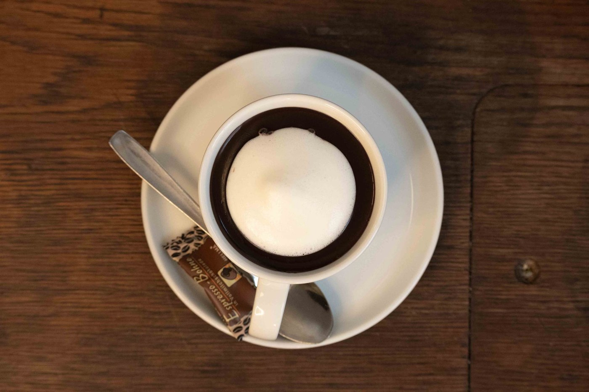
| 営業時間 | 月・木 10:00〜18:00／金・土・日 10:00〜20:00 |
|---|---|
| 定休日 | 火曜・水曜 |
| 住所 | Haspelgasse 7, 69117 Heidelberg |
| 予約 | 不要（予約についての公式の記載なし） — ☎ +49 1578 4884090 ／ 公式サイト |
| 営業時間 | カフェ 火〜日 9:00〜18:00（パン売場は火〜金7:00〜19:00、土日7:30〜18:00） |
|---|---|
| 定休日 | 月曜 |
| 住所 | Hauptstraße 212, 69117 Heidelberg |
| 予約 | 不可（セルフサービス。団体予約・結婚式の受付もしないと公式に記載） — ☎ +49 6221 20661 ／ 公式サイト |
本ガイドは個人利用目的で作成。掲載情報は2026年10月時点の調査に基づく。写真出典: 各店の公式サイト・公式SNS、および観光局・地域情報サイト等の掲載写真（著作権は各サイト・各撮影者に帰属）。引用元は店ごとにカード内へ明記。